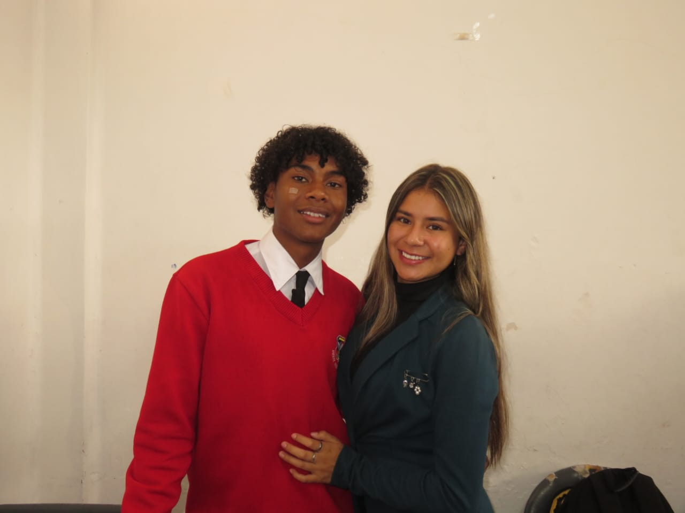
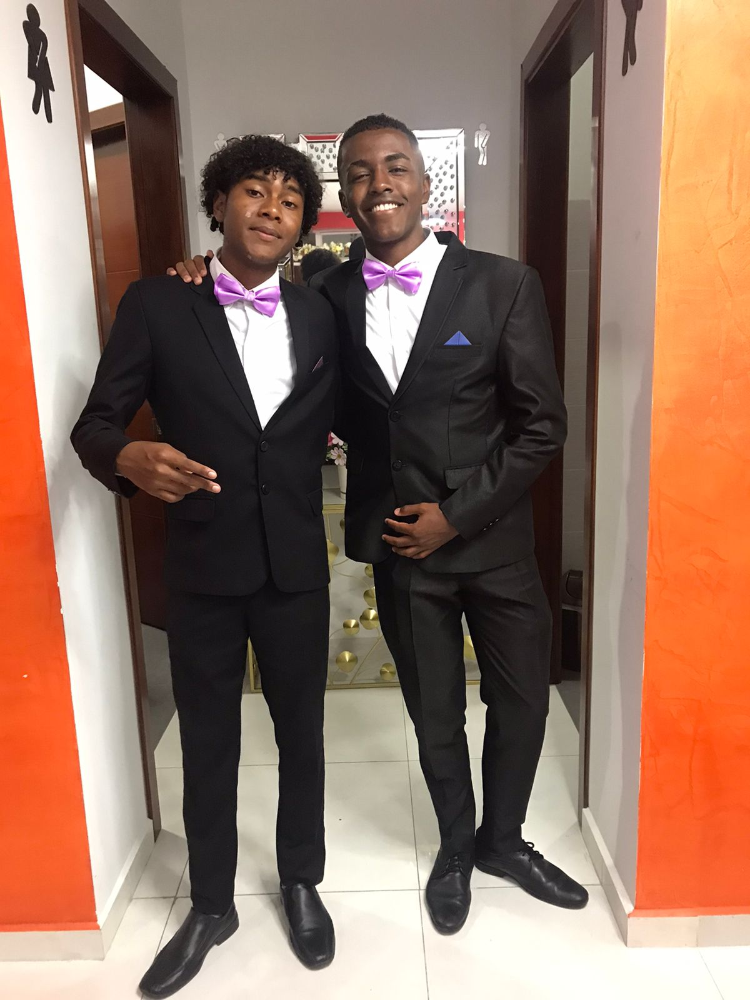
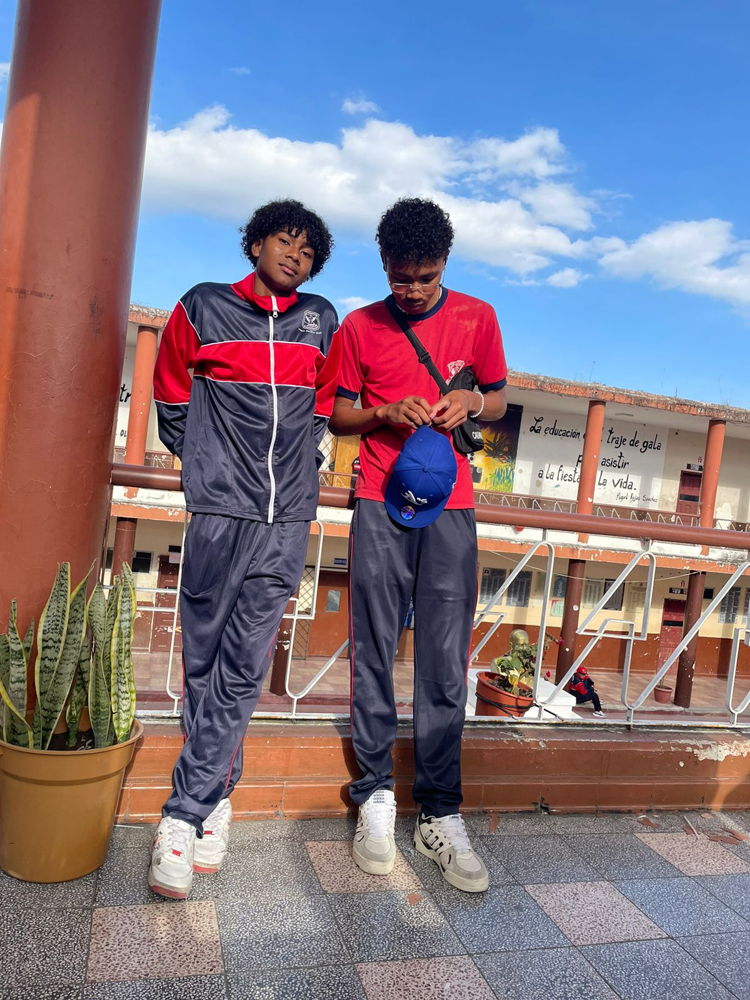
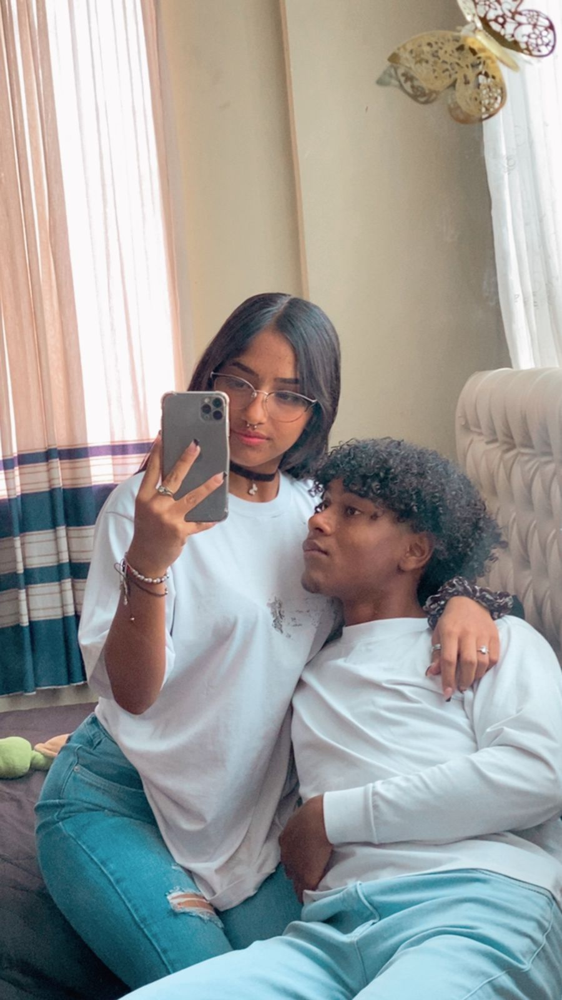
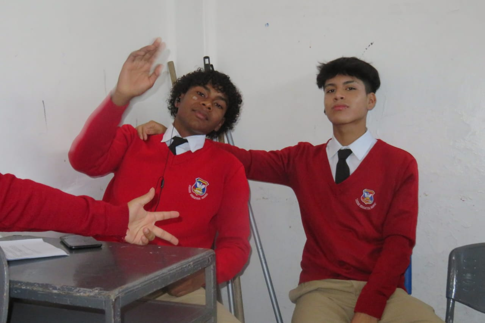
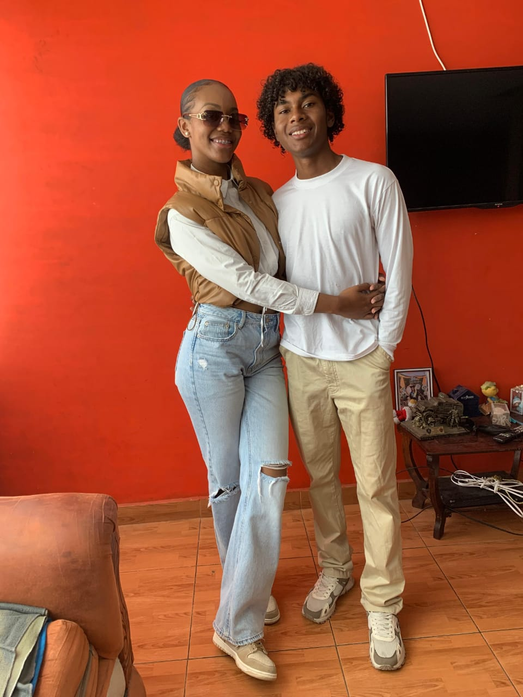
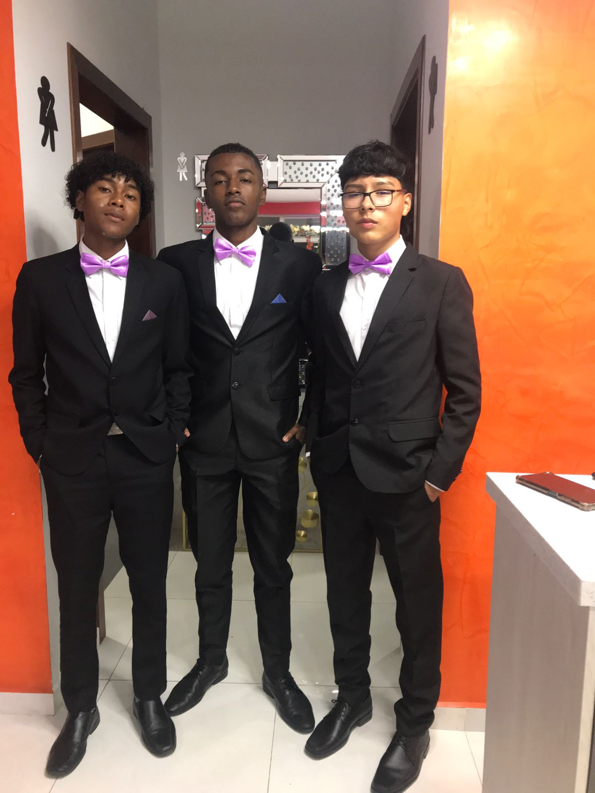
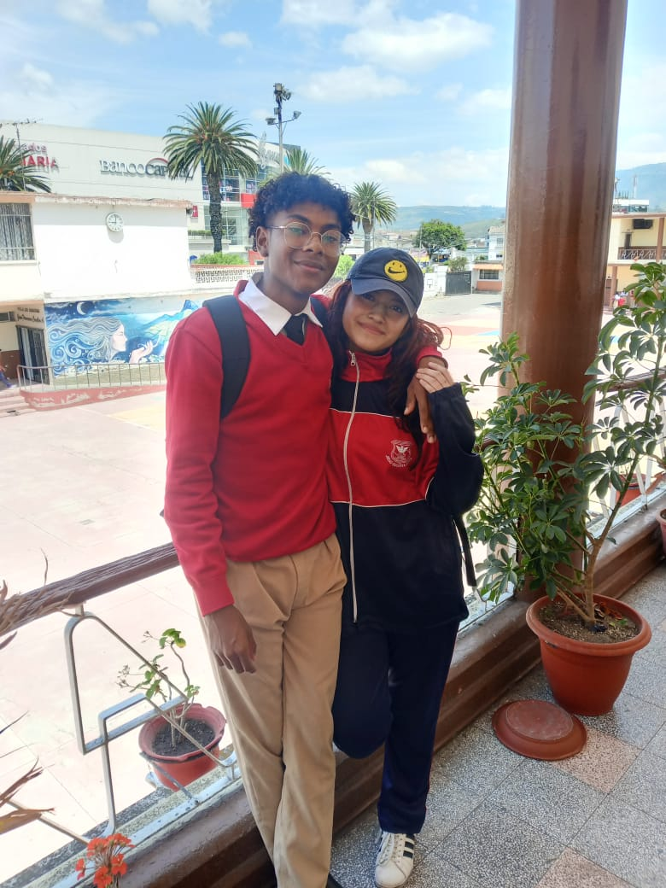
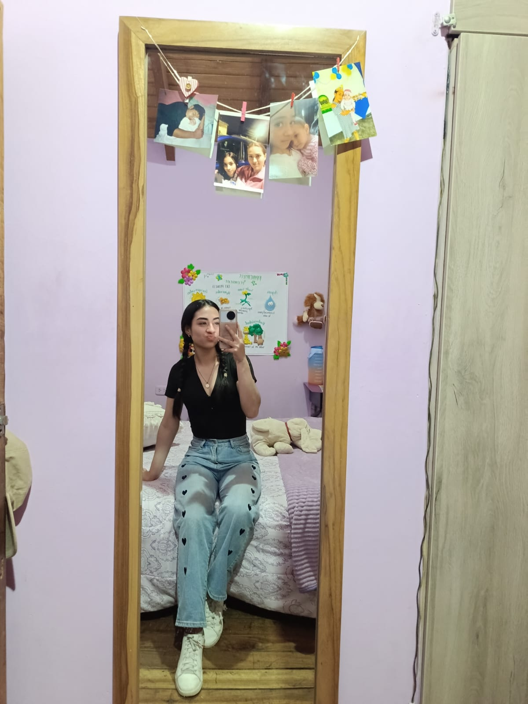

-Es pequeña
-Esta soltera (nadie le quiere)
-Le amo mas a su mama que a ella
Ella es mi mejor amiga, se enoja mucho conmigo porque soy mucha risa para ella (no se como me aguanta), la quiero a pesar el poco tiempo que nos conocemos.
-Esta soltero
-Es pelotero
-Tiene bella sonrisa
El es mi hermano que me acompaña en cada locura que hago, sabe muchas cosas de mi como yo se de el. Eh pasado muchos momentos y es un gran amigo.
-Es alto
-Es mulatico
-Es perro (no le llega la indicada)
El es mi hermano mayor con el que tantas aventuras es vivido. siempre a estado para mi ayudandome, riendo juntos, jugando, y muchas mas.
-Es una negra enana
-Le gustan los viejos old money
-Su mamá me ama
Sara es de las amistades en las que el tiempo no importa, a pesar del poco tiempo que llevamos siendo amigos se a convertido en alguien importante para mi.
-Tiene mas huecos que colador
-Es muy guapo
- 6-1 Y TE DUELE PERRAAA
Parcero lo llevo conociendo bastante tiempo, con el tambien es vivido varias aventuras, mas ahora que es mi fiel compañero en el curso, el que no me deja morir en ningun examen.
-Es muy alta
-Tiene un gran humor (negro)
-Es hermoso su pelo (es cokimba)
Esta negra la es conocido poco tiempo, pero es llegado a tener una conexion muy grande. Es alguien que aprecio mucho y quiero.
-Soy yo pero blanco
-Es de medellin locas
-Me encanta su cicatriz (dice la sara)
Nos conocimos ya porque los dos nos llamamos igual "Jostin Flores", solo que el es "Justin" pero no hay mucho cambio. Tambien lo conozco desde hace años en este tiempo nos hemos acercado mas y se a convertido y un gran amigo.
-Tiene los labios raros
-Tiene el pelo chistoso
-Es una tonta pero le quiero
Tiene una voz chillona, le odio a veces porque dice huevadas. La conozco hace muy poco tiempo pero se a convertido muy importante para mi.
-Es una muchacha muy lindaa
-Tiene cara de brava (no lo es)
-Es alguien admirable
Es una chica que conoci hace poco, pero que en este poco tiempo es tenido una gran conexion con ella, es alguien a la que admiro mucho aunque a veces piense que es una tonta. Es cieguita (yo le digo asi), pero es mi cieguita linda